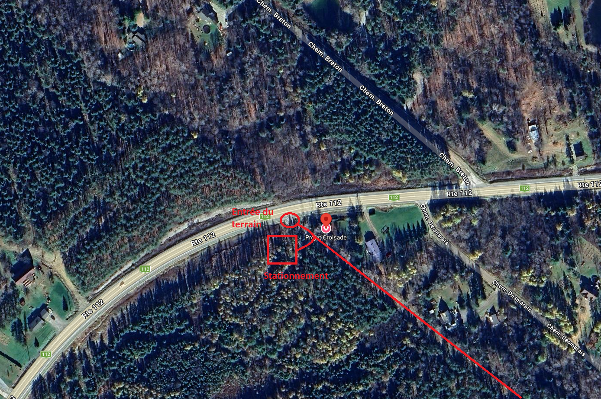
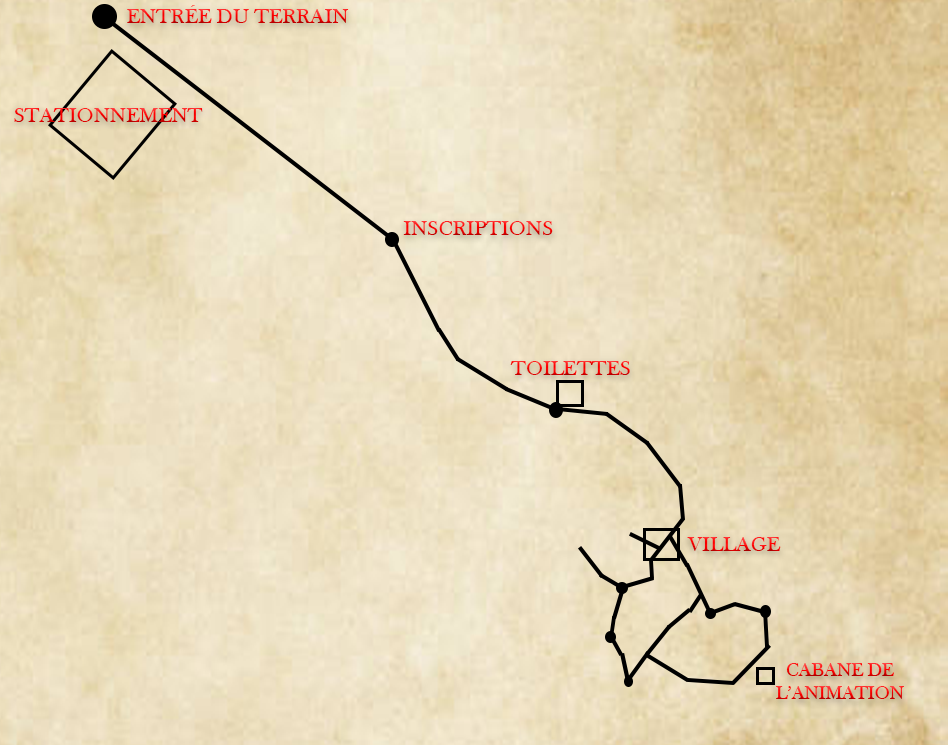
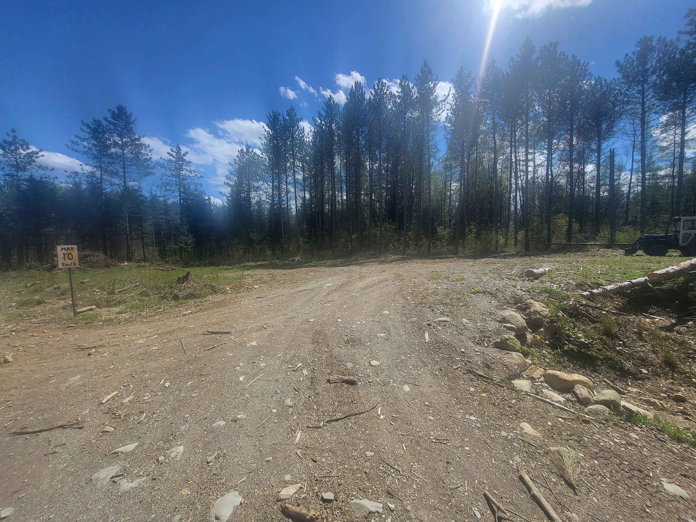
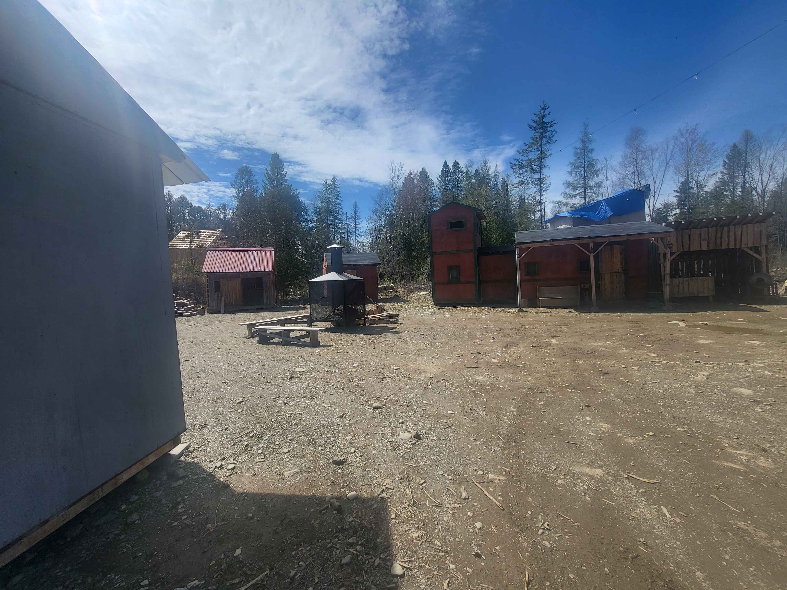

Calendrier des événements
Voici les dates prévues pour les activités à venir :
Coûts et inscriptions
| Profil | Par événement | Passe de saison |
|---|---|---|
| Jeune joueur (16–21 ans) | 35 $ | 140 $ |
| Joueur régulier (22 ans et plus) | 50 $ | 200 $ |
| Location d'équipement | À voir avec l'animation | |
| Utilisation des cabanes | Gratuit - premier arrivé, premier servi | |
Pré-inscription en ligne
Les pré-inscriptions se font par virement Interac à projetcroisade@gmail.com.
Envoyez un courriel avec :
- Votre nom complet
- La date de l'événement souhaité
- Votre fiche de personnage (créer votre personnage)
Lors du virement :
- Identifiez-vous clairement
- Inscrivez votre nom ainsi que ceux de tous les membres de votre groupe
Inscriptions sur place
Le vendredi soir, rendez-vous à la tente blanche située un peu plus loin sur le chemin menant au terrain. Un membre de l'organisation s'y occupera des inscriptions jusqu'à 21h.
Après 21h, les inscriptions se font directement au comptoir des métiers, en jeu. Vous pouvez vous y rendre avec le poing levé (symbole hors-jeu) afin d'éviter toute interaction en jeu avant d'être officiellement inscrit.
Les pré-inscriptions en ligne sont priorisées. Notez qu'un certain délai d'attente est possible au comptoir des métiers : le PNJ responsable doit d'abord s'occuper des joueurs déjà en jeu avant de procéder à votre inscription.
Déroulement du GN
Un GN (Grandeur Nature) se déroule sur un week-end, du vendredi soir au dimanche après-midi.
- Vendredi 18h Arrivée sur le terrain
- Vendredi 18h–21h Période d'inscription sur le terrain
- Vendredi ~21h Briefing pré-GN
- Vendredi ~21h30 Début du GN
- Vendredi nuit - 1h à ~8h Couvre-feu (aucune animation en jeu, aucune attaque de campements)
- Samedi 16h–18h Pause et briefing de soirée pour les animateurs
- Samedi nuit - 1h à ~8h Couvre-feu (aucune animation en jeu, aucune attaque de campements)
- Dimanche ~13h Fin du GN
Codes promo
- Les codes promos sont tous à usage unique.
- Un seul code promo peut être utilisé à la fois.
- Les codes promos de type « familial » sont utilisables pour les 5 événements de l'année.
Pour utiliser un code promo, ajoutez-le simplement au courriel lors de votre inscription.
Ex. : code promo : XX90-L
Lieu
1080 Route 112, Weedon, QC J0B 3J0
Entrée du terrain

Carte du terrain

Stationnement pour les joueurs
Un espace de stationnement est réservé aux joueurs sur le terrain. À l'entrée, repérez le panneau 10 km/h : c'est votre repère pour localiser l'emplacement de stationnement.

Cabanes

Accès et attribution
Il n'y a pas de location de cabane sur le terrain : c'est premier arrivé, premier servi, et c'est entièrement gratuit. En arrivant sur le terrain, vous pouvez choisir une cabane disponible, à condition qu'elle ne soit pas occupée et que son propriétaire réel ne participe pas à l'événement. Si le vrai propriétaire y participe, il a la priorité sur la cabane.
Niveaux de jeu des cabanes
La plupart des cabanes comportent deux niveaux :
- Niveau 1 (en jeu) : la partie accessible à tout moment durant le GN, qui doit être la plus décorum possible.
- Niveau 2 (hors-jeu) : l'espace réservé au sommeil et au rangement du matériel de camping. Il est interdit d'y entrer sans la permission de la personne qui occupe la cabane.
Les cabanes ne comportant qu'un seul niveau doivent être le plus décorum possible : cachez vos affaires hors-jeu dans des coffres, sous un lit, sous une couverture décorum, etc.
Décharge de responsabilité
Avant d'utiliser une cabane (pour y dormir ou y ranger vos affaires), vous devez vous rendre au comptoir des métiers pour signer la décharge de responsabilité.
Inspections
Une inspection des cabanes a lieu au début et à la fin de chaque événement. Le joueur doit être présent pour signer l'inspection de sa cabane en fin d'événement. Si vous partez avant la fin, signalez votre départ au comptoir des métiers.
Règles générales
- En bref : ne rien briser, ne rien déplacer, ne pas laisser traîner.
Consultez la décharge du terrain signée sur place pour tous les détails.
Tentes
Tentes décorum
Les tentes décorum peuvent être plantées en jeu, n'importe où sur le terrain. Évitez toutefois de les installer dans des endroits propices aux combats pour ne pas risquer de les endommager.
Tentes non décorum
Les tentes non décorum doivent être plantées sur la plaine située juste après le stationnement, près du kiosque d'inscription. Évitez de laisser des déchets sur la plaine : des poubelles sont disponibles un peu partout sur le terrain.